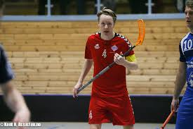
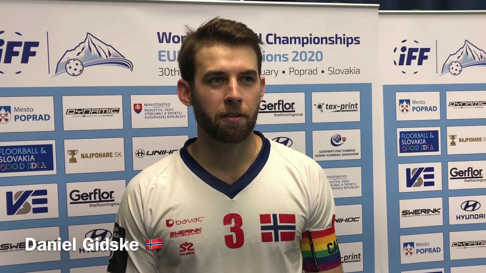
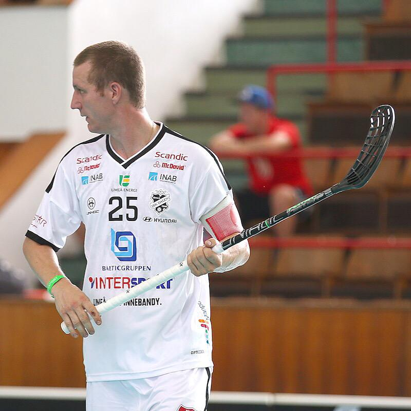

Floorball rules
In floorball there is a lot of different rules to think of while playing.
You always have to carry the right equipment to stay on the field.
That is equipments such as gym shoes, a stick and your team kit.
You are not allowed to push other opponents in other ways than shoulder against shoulder
You are allowed to kick the ball only once each time you have it
and you are allowed to pass the ball to a teammate with your feet.
To hit other opponents directly at the stick is not allowed,
you will have to take the ball away from them in a clean way.
The Norwegian national team
In Norway floorball is a groving sport which is getting more and more popular.
Norway as a nation is quite higly ranked in the world, standing at around #6 in the world ranking
The womens national team is ranked about the same as the men. The world cup is being played
every second year and the Norwegian national teams is attending them each time.
You have several Norwegian national team players that plays and has been playing abroad.
These are players such as Sindre Bjerknes, Daniel Gidske and Ketil Kronberg.
They have all been playing in Sweden which is the #1 ranked floorball nation in the world.


